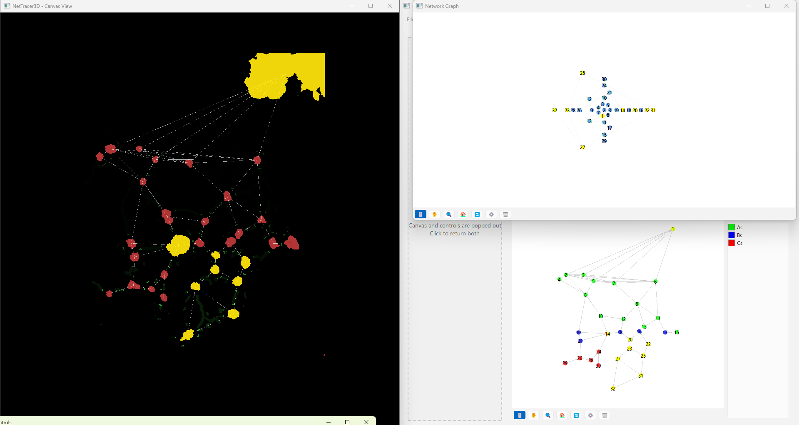
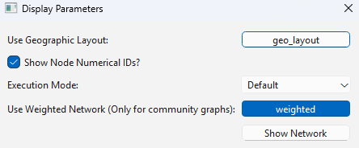
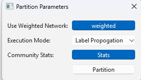
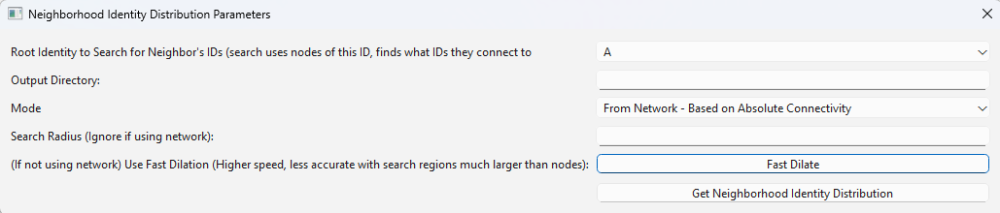
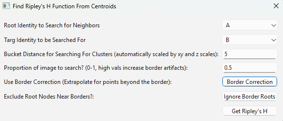
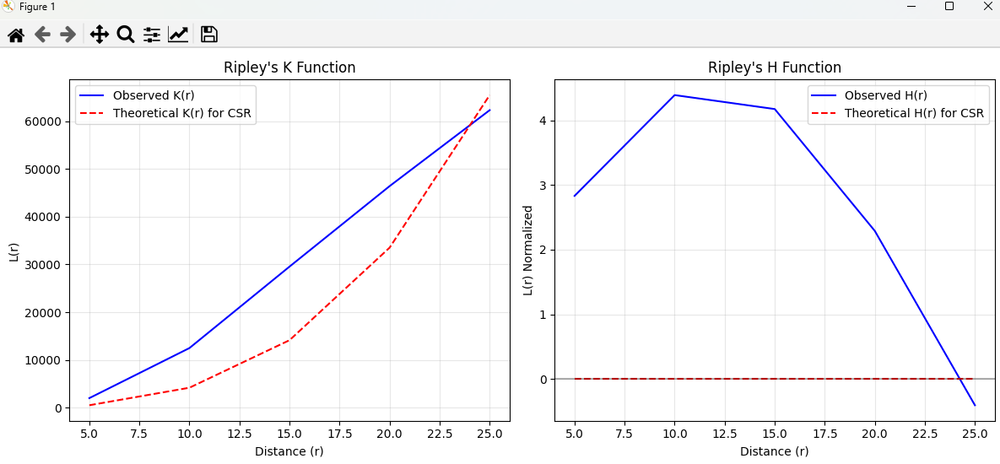
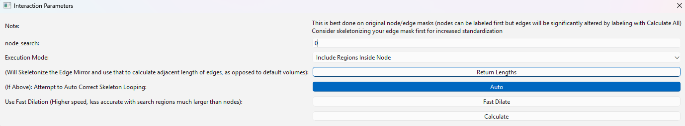
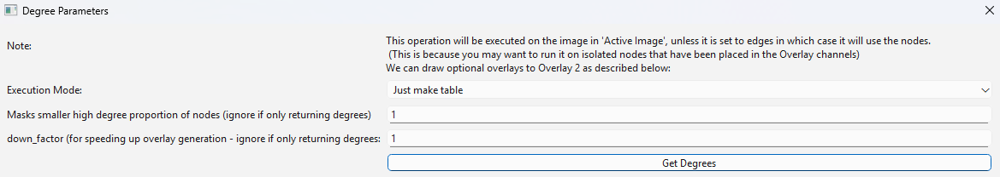

All Analyze Menu Options
The analyze menu provides options for creating graphs and statistical tables. The first submenu, Network, contains functions for visualizing networks and analyzing network communities. The second, Stats, is used primarily to create tables and graphs describing the network or image morphology.
Analyze → Network → Show Network
Visualizes the current network as an interactive graph. This view is also embedded in the lower right widget by default, but this version can be opened fullscreen and supports two simultaneous layouts.
The generated graph is linked to both the image viewer window and the default network graph viewer in the bottom right: selecting a node in one selects it in the others.


All the graphs are linked, making it easy to locate nodes of significance.
Depending on the chosen view, rendering may be slow for very large networks, though loading occurs on a separate thread and does not freeze the display. Selecting this option displays the following menu:


Parameter explanations
Render mode — determines where nodes are located in the graph.
Spring layout — places clusters of interconnected nodes together. Useful for evaluating what is connected to what, but loses clarity with very large numbers of nodes.
Centroid layout — places nodes to reflect their position in the actual image. Requires node centroids to have been computed, after which it loads almost instantly regardless of graph size. Useful for correlating nodes in the graph with nodes in the image.
Component layout spring — as the spring layout, but lays out each connected component separately. In large graphs with many disconnected components, the default spring layout may place them on top of one another, obscuring what is connected to what; this layout avoids that.
Component layout shell — also lays out each component separately, using a shell layout. The most central node of each component is placed in the middle, its immediate neighbors in the next circular shell, their neighbors in the next, and so on. Useful for eyeballing shortest path length or how dependent a graph is on its central node, though harder to interpret when a component contains very many nodes.
Execution Mode
Default — all nodes are blue circles.
Community Coded — colors nodes by community, assuming the network has been community partitioned. You are prompted to partition if it has not.
Node-ID Coded — colors nodes by their node ID, where one exists.
Node/Edge Rendering — optionally sets the edge color to gray or black, and sets the sizes of nodes and edges in the render.
Show Node Numerical IDs — labels each node on the graph with its internal label value from the image. Useful for finding specific nodes, but may clutter the visualization.
Draw weighted edges — draws weighted edges more thickly. Nodes that find repeat, distinct connections in connectivity networks acquire weights, as do manually added repeat node connections.
For Centroid Layout… — when using the centroid layout, renders nodes with lower z values larger, allowing 3D location to be judged visually on a 2D graph. Deselect to render all nodes at the same size.
Press Show Network to open a new window displaying the interactive graph.
Analyze → Network → Generic Network Report
Reports basic information about the current Network3D object: the number of
nodes, the number of edges, the number of nodes per node_identities category,
and the number of nodes per community where assigned, along with the proportions
of each. Reports are placed in the upper right table.
Analyze → Network → Create Communities Based on Network
Partitions nodes into communities based on network structure. This form of community clustering is well suited to finding functional units in the network, or spatial aggregates in proximity networks; for cells, consider neighborhood- based clustering instead. Node communities are saved and loaded with the Save/Load Network3D object options.


Parameter explanations
Use Weighted Network — has the community partition consider graph weights. Generated networks acquire weights when two or more discrete node objects join objects together, and objects joined by heavily weighted edges are more likely to be grouped into the same community.
Execution Mode
Label Propagation — partitions using NetworkX’s label propagation algorithm.
Louvain — partitions using NetworkX’s Louvain algorithm.
Leiden — partitions using the Leiden algorithm, an enhanced Louvain. This requires the optional
leidenalgpackage (pip install leidenalg), which is not installed by default.
These are all quick, efficient ways to group networks; label propagation is somewhat faster but more variable. Network community detection carries some degree of randomness in how it groups objects, depending on which nodes it starts from.
Community Stats — whether to calculate community-based statistics for the graph. For the entire network:
Modularity Entire Network
Number of Communities
Community Sizes
Average Community Size
Number of Iterations (Louvain only — the number of iterations run)
Global Clustering Coefficient (NetworkX)
Assortativity (NetworkX)
Inter-community Edges (how many edges exist between communities)
Mixing Parameter (ratio of external to total edges for nodes)
And for each discrete community:
Density (NetworkX)
Conductance (NetworkX)
Average Clustering (NetworkX)
Degree Centrality (NetworkX)
Average Shortest Path Length
These statistics come from NetworkX; see https://networkx.org/ for details.
Seed (int) — sets the random seed for the community partition, since the starting point affects the outcome. Use the same seed each time for reproducibility, or vary it to see how partitioning is affected. Leaving it empty uses the seed of the
randand numpy random modules, initialized at program start.
Press Partition to separate the nodes into communities. In addition to
setting the node_communities property, tables showing the community for each
node and the associated statistics are generated in the tabulated data widget.
Analyze → Network → Create Communities Based on Node’s Immediate Neighbors
Evaluates the distribution of node identities around each node and clusters those that appear similar. With many identities assigned from multichannel data, this option detects meaningful regions in the image, making it the usual choice for multiplexed cellular data. It generally uses a proximity network to evaluate node neighbors.
Parameter explanations
Num communities — the number of communities to create.
Clustering Algorithm - Choose between KMeans (which is good for neighborhood vectors of binary classified identities) or Leiden clustering.
Clustering Seed — an integer changing the initial seed, producing a slightly different output.
Min Neighbor Count — the minimum number of neighbors a node must have to be considered for grouping. Setting a value here avoids including isolated nodes in the output.
N Nearest Neighbors — optional. Normally a proximity network tying neighbors together is generated first, in which case this can be skipped. Otherwise, enter a number of nearest neighbors for each node to find, creating a new proximity network for this function.
Max Distance — optional, and similar to the above. Restricts the new proximity network to connecting nodes within a specified distance, which prevents different regions from connecting across gaps they should not. The distance is scaled by the
xy_scaleandz_scaleproperties.Community UMAP — returns a UMAP of how similar the node neighborhoods are. The UMAP is interactive: use a lasso to select groups of nodes, then right click in the main window to assign them to their own communities. Several unique rendering options are available. These interactive UMAPs can be saved and later reloaded using the folder icon that loads spreadsheets in the top right, skipping the embedding computation.
Neighborhood Heatmaps — returns a heatmap showing the compositions of the neighborhoods used to cluster the nodes. This does not specify the composition of the resulting communities — use Analyze → Network → Calculate Composition of Network Communities (And UMAP) for that — although the data will be similar.
Treat Multi-Identity Nodes as Unique Identities — across many channels, nodes will likely acquire multiple identities. By default this function clusters on the distribution of each unique identity; enabling this treats any unique combination of identities as its own group. With many combinations this massively increases the computational load, so skipping it is generally recommended.
Press Get Communities to assign communities based on neighborhoods.
Algorithm explanation
The method evaluates the neighbors of each node in the network, arranges those as proportions out of 1 in a one-dimensional array, and clusters those arrays with sklearn’s K-means clusterer or leidenalg’s leiden methods.
Analyze → Network → Create Communities Based on Hexagonal/Rhomboid Proximity Cells
Splits the image into cells of user-defined size and assigns nodes to communities based on whether they share a cell. Parameters cover the hexagon side length and whether hexagonal prisms or dodecahedrons are preferred in 3D; 2D always uses hexagons.
This has nothing to do with the network, and is an alternative way to group nodes into communities without a network or nearest-neighbor focus. The resulting cells can be further grouped into supercommunities to find neighborhood motifs, though this is weaker than node neighborhood community assignment where sufficient channels are available.
Parameter explanations
Cell Size — the volume of a cell, in 2D or 3D. Cells are always cubes or squares.
xy scale — the 2D plane scaling of the image.
z scale — the 3D voxel depth scaling of the image.
The latter two parameters scale the cell to be cuboidal, so that its side lengths are equal in true units. Press Get Communities to assign communities based on cells.
Analyze → Network → Calculate Composition of Network Communities (And UMAP)
Designed to run on groups of nodes that have been community partitioned and carry
a node_identities property, this evaluates their general compositions. It
yields either compositional proportions of node identities per community, or a
weighted average of the compositions of all communities — in the latter case
weighted by size, so that larger communities contribute more.
It can also generate a UMAP for the communities, in which communities positioned close together have more similar identity compositions. This is a good way to characterize what communities consist of — for example, when neighborhoods of different cell types have been grouped and the question is what a generic community looks like.
Parameter explanations
Mode
Average Identities per community — compositional information on all communities.
Weighted Average Identity of All Communities — compositional information on all communities weighted by community size. Does not support UMAP.
Generate UMAP — generates a UMAP comparing the community compositions.
Label UMAP Points How?
No Label — points are not labeled.
By Community — assigns each point its numerical label.
By Supercommunity — colors communities by the supercommunity they belong to, assuming one has been assigned via Analyze → Network → Convert Network Communities…
Min Community Size to be grouped… — does nothing if empty. If an integer is entered, communities with fewer nodes than this value are excluded from the UMAP, which is useful for ignoring small, insignificant communities.
Return Node Type Distribution Robust UMAP — normally communities are grouped in the UMAP by their proportional compositions of node types. With this selected, they are instead grouped by how much they overrepresent specific node types, where overrepresentation means the proportion of nodes of that type in the community, relative to all nodes of that type, exceeds the proportion of all nodes within that community relative to all nodes in the image.
Press Get Community ID Info to populate the data to the upper right tabulated data widget and, if selected, show the UMAP.
Algorithm explanation
Without the weighted average of all communities, the method simply finds the proportion of each identity per community.
When generating the UMAP, using the umap module:
Extract community data by collecting community IDs and stacking their composition arrays into a matrix.
Initialize the UMAP reducer and random seed (42) for reproducible dimensionality reduction.
Transform compositions with UMAP to reduce high-dimensional cluster vectors to 2D coordinates.
Create a scatter plot with points colored by cluster ID.
Print composition analysis showing the raw data and identifying the two most dominant classes per community.
When using the weighted average for all communities, which does not support UMAP:
Group nodes by their community ID.
For each community, count the number of nodes with each identity type.
Weight these counts by the size of the community.
Sum the weighted counts across all communities.
Normalize twice: first by the total number of nodes, then so that all proportions sum to 1.
Return a dictionary mapping each identity type to its weighted proportion in the network.
Analyze → Network → Convert Network Communities Into Supercommunities
Also returns compositional heatmaps.
Finds the average composition of all communities, assuming node_identities
exist, using the logic of the function above, then groups similar communities
into supercommunities. This allows communities to be crunched into a smaller set
for analysis of similar domains across the image. The number of supercommunities
is set by the user.
Running this also displays a heatmap of which node_identity is prominent in
which supercommunity. Supercommunities are assigned by size, with 1 the largest
group and n the smallest, so relative sizes can be compared easily.
Warning
Running this method reassigns the communities property to the
supercommunities, so save the original communities first. This is done so that
all community-associated functions can be used on the new supercommunities.
During an active session the method always runs on the original communities
rather than the supercommunities, storing them in a separate temporary
property, which allows the method to be re-run with different parameters.
These temporary communities are not used for anything else.
Parameter explanations
Num Supercommunities — the number of supercommunities to group communities into; the number of communities should presumably be larger than this by some logical margin. Arbitrary counts apply only to K-means clustering, as DBSCAN always decides the count itself. K-means also guesses a suitable count if nothing is entered.
Clustering Seed — the random seed used for supercommunity assignment, 42 by default.
Min Community Size to be grouped… — does nothing if empty. If an integer is entered, communities with fewer nodes than this value are assigned to Supercommunity 0, which is useful for ignoring small, insignificant communities.
Return Node Type Distribution Robust Heatmaps — the method always returns a heatmap showing the proportional composition of each supercommunity for each ID type. Enabling this returns two additional heatmaps:
The second shows, in each cell, the proportion of that node type in that supercommunity relative to the total available nodes of that type.
The third divides the second by the proportion of total nodes, of any type, comprising that supercommunity. This shows which node types are overrepresented in a supercommunity, since each node type would be expected to have the same proportional representation relative to all nodes of that type as the supercommunity’s overall representation. Cells above 1 overrepresent that node type and cells below 1 underrepresent it, which makes compositional anomalies easy to spot.
Mode — selects the clustering algorithm.
KMeans — K-means clustering. Generally recommended.
DBSCAN — DBSCAN clustering, somewhat experimental. DBSCAN tends to assign low-appearing groups as outliers, which in the current implementation are assigned to Supercommunity 0, alongside any communities thresholded out by size.
Leiden - Uses leiden clustering which may be slower but does not require a community count input.
Press Get Supercommunities to group the nodes and generate the heatmaps. This also returns several tables to the tabulated data widget, including tabulated versions of all heatmaps, the proportion of total nodes in the network for each supercommunity, and a nodes-to-supercommunity ID table.
Algorithm explanation
The method primarily uses the sklearn KMeans algorithm (https://scikit-learn.org/stable/modules/generated/sklearn.cluster.KMeans.html):
Find the composition of all communities using Analyze → Network → Identity Makeup of Communities logic.
Convert compositions to a numpy array to prepare data for scikit-learn clustering.
Apply K-means clustering with the specified number of supercommunities and random seed.
Alternatively the sklearn DBSCAN algorithm can be used (https://scikit-learn.org/stable/modules/generated/sklearn.cluster.DBSCAN.html):
Calculate
min_samples, the minimum neighbors a point needs to be a core point:max(3, sqrt(n_samples) * 0.2).Estimate
eps, the supercommunity radius, using the 80th percentile of 4th-nearest-neighbor distances. Non-core points withinepsof core points become border points of that cluster.Run DBSCAN with the calculated parameters.
Points that are neither core points nor within
epsof core points become outliers.
The Leiden algorithm meanwhile will be based on the leidenalg and igraph python packages.
If using KMeans with no supercommunity count provided:
Supercommunity counts from 1 to 20 are temporarily generated.
Each is graded on its Calinski-Harabasz score (https://scikit-learn.org/stable/modules/generated/sklearn.metrics.calinski_harabasz_score.html).
The count with the highest score is used.
Analyze → Stats → Network Related → Network Statistics Histograms
Generates and displays histograms of the distributions of node properties in the network, as matplotlib figures and in the tabulated data widget. The histograms are generated using NetworkX functions; see https://networkx.org/nx-guides/content/exploratory_notebooks/facebook_notebook.html for information about them.
With a network calculated, selecting this option displays the following menu:

Selecting any of the green button options generates a graph of the corresponding distribution and exports the data to the tabulated data widget.
Parameter explanations
Degree Distribution — the count of connections per node across the network. Identifies network architecture: power-law distributions indicate hub-based networks, while normal distributions show egalitarian connectivity.
Shortest Path Length Distribution — the minimum number of steps between all node pairs. Assesses network efficiency: narrow peaks at low values indicate efficient small-world networks.
Degree Centrality — direct influence through immediate connections. Identifies nodes with the most direct reach.
Betweenness Centrality — critical bridge nodes connecting different network regions. Finds bottlenecks and assesses vulnerability to node removal.
Closeness Centrality — how quickly each node can reach all others. Identifies nodes optimally positioned for information spreading.
Eigenvector Centrality — prestige, weighting connections to highly-connected nodes. Identifies nodes connected to important hubs, favoring quality of connections over quantity.
Harmonic Centrality — a robust version of closeness centrality that handles disconnected components. Use where the network may have isolated clusters.
Load Centrality — the traffic burden each node would carry in network flow. Identifies potential communication bottlenecks and workload distribution.
Current Flow Betweenness — models flow using electrical circuit principles, considering all paths rather than only the shortest. Gives a more realistic assessment of node importance in flow networks.
Communicability Betweenness — bridging importance based on walks of all lengths. Identifies nodes important for sustained, multi-step communication.
Clustering Coefficient — how interconnected each node’s immediate neighbors are. Distinguishes tight-knit communities from sparse, tree-like regions.
Triangle Count — triangular connections, meaning three mutually connected nodes, per node. Assesses local group cohesion and community strength.
K-Core Decomposition — nested dense subgroups in which all nodes have a minimum degree k. Reveals hierarchical community structure and dense network cores.
Eccentricity — the maximum distance from each node to any other reachable node. Identifies peripheral versus central nodes and assesses network compactness.
Node Connectivity — the minimum number of nodes needed to disconnect each node’s neighborhood. Assesses local network robustness around individual nodes.
Average Dispersion — how scattered each node’s neighbors are from one another. Distinguishes bridge nodes, with high dispersion, from community-centered nodes, with low dispersion.
Network Bridges — edges whose removal would disconnect network components. Finds critical connections essential for network cohesion.
Compute All Analyses and Export to CSV — batch computes all of the above and saves them, along with PNGs of the associated histograms, to a chosen directory. Useful for rapid comparison across datasets when it is unclear which statistics may be significant, and for large networks where computation is slow — load only the network in a separate instance of NetTracer3D and run the batch computation as a background task.
Analyze → Stats → Spatial → Identity Distribution of Neighbors
Explores which kinds of nodes, as categorized by node_identities, tend to be
located near or connected to nodes of a given identity. Use this to characterize
what interacts with what — for example, to determine what sits near what within
cellular neighborhoods.


Parameter explanations
Root Identity to Search… — the identity of the nodes searched outward from. The neighborhoods of these nodes are characterized.
Mode
From Network — quantifies neighbors based on adjacent network connections, revealing information based on the connectivity of the network.
Use Labeled Nodes — quantifies the volume of neighbors within the search region, revealing which sorts of nodes are physically in the vicinity.
Quantify Nodes or Edges?
Quantify Node Counts — counts the nodes of each identity available within the search space from your chosen identity.
Quantify Edge Counts — counts edges instead. Two nodes sharing the same five neighbors have ten edges between them, since unique connections are being quantified, where the node count option would return five.
Search Radius (mode 2 only) — the distance nodes search to characterize their neighborhoods. Mode 1 always searches for immediate network neighbors.
Use Fast Dilation… (mode 2 with a search radius) — attempts to solve the dilation in parallel using the
edtmodule. Ifedtis unavailable or fails, the scipy method is used as a fallback. When disabled, the scipydistance_transform_edtmethod is used, which may be slower.
The following parameters apply to network mode only:
Run Comparative Random Simulation? — scrambles the node centroids into random locations and returns data about the random distribution for comparison against the observed one.
Null Model - Allows control if you prefer label permutation or centroid scramble. By default it is set to scramble labels, which shuffles the set of node identities belonging to each node and reevaluates the data based on the scrambled dataset, without altering the network whatsoever. This is the preferred setting to evaluate for randomness in a space with inherently fixed locations, such as cells in a tissue. You can change this to instead scramble all centroids and regenerate the network for each random simulation, which also involves the ‘Centroid Scramble Only’ parameters.
Number of Random Iterations to Run? — the number of random iterations compared against the observed data, of which the average values are used. Defaults to 1; increasing it improves accuracy at the cost of computation time.
Arrange Random Nodes How? — where a bounding mask defines the region nodes can realistically occupy, such as the boundaries of a tissue, place it in a channel other than the nodes channel and select that channel here. Random networks are then scrambled only within that mask.
Number of Neighbors to Connect for Simulated Network — must match the value used to generate your original proximity network, so that the random proximity networks behave the same way.
Network Connection Distance for Simulated Network (Scaled) — likewise must match any distance cap placed on your original proximity network. This automatically uses the
xy_scaleandz_scaleparameters where set.
Press Get Neighborhood Identity Distribution to display several matplotlib bar charts, with the associated data tables added to the tabulated data widget.
Press Batch: All Network Combinations… to compute neighbor information for all available identity combinations. This returns a matrix, as both a graph and tables, giving the number of times each identity finds at least one neighbor of another identity. Three are produced: raw sums, their natural logs, and percentile-based data — with identities A, B, and C, the last reports the percentage of A’s neighbor interactions that are A-B and the percentage that are A-C, excluding self pairing. This batch calculation is best combined with proximity networks to describe the border compositions between objects at an arbitrary distance.
Outputs
In mode 1:
Neighborhood Distribution of Nodes in Network from Nodes: ‘X’ — how many total neighbors of each ID that nodes of ID X have, including other type X.
Neighborhood Distribution of Nodes in Network from Nodes ‘X’ as a proportion of total nodes of that ID — for each ID category, the proportion of that node type in the network that are neighbors of nodes of ID X, including other type X.
In mode 2:
Volumetric Neighborhood Distribution of Nodes in image that are ‘y’ distance from nodes: ‘X’ — the total volumes of nodes of each ID within distance y of nodes of ID X, excluding other type X.
Density Distribution of Nodes in image that are ‘y’ from Nodes ‘X’ as a proportion of total node volume of that ID — for each ID category, the proportion of the volume of that node type within distance y of nodes of ID X, excluding other type X.
Clustering Factor of Node Identities within ‘y’ from nodes ‘X’ — for each ID category, the volumetric density of nodes of that ID within distance y of nodes of ID X, divided by the density of nodes of that ID across the entire image, excluding other type X. This is also known as relative density: a value greater than 1 means that node ID is unevenly distributed closer to nodes of ID X, while a value less than 1 means they preferentially avoid nodes of ID X.
With the random simulation computed, a further graph and table give the observed values divided by the simulated values for the computed relationships, where values greater than 1 correspond to greater than random.
Algorithm explanation
Mode 1 counts neighbors that are immediate network neighbors of the desired node ID.
Mode 2 searches using either a distance transform or pseudo-3D binary dilation. It searches outward from nodes of the desired ID type and therefore does not include them, which is why this option never evaluates its own clustering.
Analyze → Stats → Spatial → Ripley Clustering Analysis
Generates a Ripley’s K curve, a function comparing relative object clustering to distance r from a random node. This identifies whether objects are clustered or dispersed and how that varies through an image. It can evaluate whether nodes of one identity cluster around nodes of another, or whether nodes of one type cluster with themselves.
The method runs on labeled nodes or on node centroids alone, prompting for node centroids if they do not exist. Because it uses centroids, it says nothing about the actual shapes of nodes.


Parameter explanations
Root Identity to Search for Neighbors — the node identity whose neighborhood is evaluated for clustered objects.
Targ Identity to be Searched For — the node identity evaluated for clustering behaviour around parameter 1. Parameters 1 and 2 appear only when identities are assigned; otherwise all nodes evaluate clustering against themselves.
Bucket Distance for Searching For Clusters… — the bucket distance for each iteration of r, auto-scaled for your image, so enter a true distance where scaling properties are set. Smaller buckets increase fidelity at the cost of processing time.
Proportion of image to search… — a float from 0 to 1 giving the proportion of the image searched from each node. A value of 1 has each node evaluate the clustering of every other node in the image, while values closer to 0 restrict the calculation to the immediate neighborhood. Higher values increase border artifacts, since the method cannot see nodes beyond the image borders and presumes those regions empty, decreasing the clustering appraisal.
Exclude Root Nodes Near Borders? — for border safety, prevents nodes near the image boundaries from searching for neighbors. The degree of exclusion is set by the following parameter.
Proportion of most internal nodes to use…? — where the above is enabled, a float between 0 and 1 giving the proportion of most internal nodes to use; higher values exclude more of the border. Setting this to 0.9 includes only the 10% most internal space of the array when finding nodes to search from. If no nodes fall within these bounds, the analysis is not performed.
Define boundaries how? — when restricting analysis within borders, this sets what counts as a boundary. By default the boundaries of the entire array are used. Where the image is, for example, a piece of tissue surrounded by background and the search should stay within the tissue volume, first create a binary mask of your foreground, place it in a channel other than nodes, and select that channel here. The easiest way to obtain a foreground mask is to threshold by intensity and then run Process → Image → Fill Holes if desired; for 2D tissue, the foreground may also be traced with the pen tool before filling holes.
Keep search radii within border…? — forces nodes to keep their search radii within those borders, automatically calculating the minimum distance from the most external nodes under consideration to the borders and using that as the search radius. This should generally be enabled when masking within tissue boundaries, or when neither masking nor using parameter 9. It overrides parameter 4.
Use Border Correction… — for use when root nodes are not masked but search radii extend beyond the image borders. To compensate for edge artifacts, centroids are cloned by reflection over the array borders, forcing the space beyond the array to mimic the space within it. This does not work well when analysis is confined to a tissue mask, as the reflection is designed for the boundaries of a rectanguloid image rather than an irregular mask shape.
Press Get Ripley’s H to calculate both the Ripley’s K and Ripley’s H functions for your dataset. (You can also use the ‘Batch’ button below this to compute it for all identity perumutations, although note this may be slow). Tables for each populate the tabulated data widget, and a graph of the following form appears:


The x axis represents the distance from any random node and the y axis a factor representing the clustering intensity observed around nodes at that distance. The blue line is the observed line; the red line represents expected behaviour from a Poisson distribution of nodes. Regions above the red dotted line are unexpectedly clustered and those below unexpectedly dispersed. The right graph is a normalized version of the left, giving a straight center line. Given the possibility of border artifacts, comparison between multiple datasets, or against a dataset of randomly seeded nodes, may be preferable to comparison against the red line directly.
Algorithm explanation
This is an implementation of the Ripley’s K function; see 10.1016/j.bpj.2009.05.039.
Take two sets of points, root and target, which may be the same set.
Build a KDTree from the root points for efficient nearest-neighbor searches.
Calculate the volume or area of the study region.
Compute the intensity (λ) as the number of reference points divided by volume.
For each root point at each distance in the bucketed r values, find neighbors using the KDTree and record how many target points fall within that radius.
When comparing a set to itself, remove self-counts to avoid counting points as their own neighbors.
Sum all weighted counts and normalize by the number of subset points (
n_subset) and the point intensity (λ).Return the array of K values for each radius value.
K values are normalized to H values by
h_values = np.sqrt(k_values / np.pi) - r_valuesin 2D, orh_values = np.cbrt(k_values / (4/3 * np.pi)) - r_valuesin 3D.These are plotted against the theoretical functions
theo_k = np.pi * r_values**2(2D) ortheo_k = (4/3) * np.pi * r_values**3(3D); theoretical H values are simply 0.
For border correction:
Restricting to internal nodes across the whole image is done by checking whether nodes lie beyond the requested distance from the border.
Where internal nodes must remain within a masked space, the distance transform to the background of the mask is obtained and thresholded to contain only the requested internal proportion. Root nodes within that volume are considered valid.
Where the node reflection option is used:
2D creates 8 potential mirror regions: 4 edges and 4 corners.
3D creates 26 potential mirror regions: all adjacent cubes minus the center.
Each region is defined by direction vectors (-1, 0, +1 for each dimension).
For each mirror region, points within
max_rof the relevant boundaries are found. A point needs mirroring if it is close enough to a boundary that analysis might miss neighbors.Qualifying points are copied using the reflection formula
new_coord = 2 × boundary - old_coord, applied only to the dimensions where mirroring is needed and preserving other coordinates unchanged.The original points plus all mirrored copies are returned.
Analyze → Stats → Spatial → Average Nearest Neighbors (With Clustering Heatmaps)
Provides information about the nearest neighbors of your nodes. Where node identities are assigned, this can be specific to the relationship between two identity types; otherwise all nodes are considered together. The output is either the distribution of nearest neighbor values and their average, or the average of all identity combinations for bulk processing. Heatmaps of nearest neighbor relationships can also be produced, as graphs or image overlays.
Parameter explanations
Root Identity… (where the node identities property exists) — nodes of this identity are evaluated for nearest neighbors of another type.
Neighbor identities… (where the node identities property exists) — nodes of this identity are searched for. May be the same as parameter 1, or may include all nodes except parameter 1.
Number of Nearest Neighbors… — the number of nearest neighbors each node finds, 1 by default, in which case only the closest neighbor distance is found. Higher values give each node the average distance to that many nearest neighbors. The program returns without result if this exceeds the number of possible neighbors.
Use Centroids? — whether to find neighbors from centroids or from entire objects. Centroids are faster but work well only for spheroids. Entire objects do not support averaging across multiple nearest neighbors, and always set the parameter above to 1.
Heatmap — generates a heatmap in which red nodes are closer on average to their nearest neighbor and blue nodes further. May be set to an overlay or a matplotlib graph.
Quantifiable Overlay — generates a grayscale image in Overlay1 in which each node is assigned a value equal to its calculated nearest neighbor distance.
The remaining parameters govern how the heatmap is colored and allow node distances to be compared against a random simulation. Click Do Comparative Simulation to obtain this data; it is always enabled when creating a heatmap, as it is required to color it correctly.
Bound Theoretical Point Distribution How? — set to Anywhere by default, which considers the distances that would arise if points were uniformly distributed throughout the entire image. Where the image contains background and only the foreground should be considered, create a binary mask of the foreground, place it in a channel other than nodes, and select that channel here. The easiest way to obtain a foreground mask is to threshold by intensity and then run Process → Image → Fill Holes if desired; for 2D tissue, the foreground may also be traced with the pen tool before filling holes.
Arrange Theoretical Point Distribution How? — random arranges nodes randomly, which is more accurate but requires some number of replicates to become fully accurate. uniform compares against a distribution in which points are maximally separated in space, which measures against maximum available separation rather than randomness, so anything beyond it is especially isolated.
Number of seed points to query neighbors — applies mainly when random is selected, where a node may end up coincidentally very close to others by chance. Increasing the number of nodes used to query neighbors reduces the likelihood of such values. This may be left unset, in which case a reasonable default is used.
Number of replicates? — increases the number of random replicates when random is selected, improving the accuracy of the simulated output.
Random Seed for Batch Simulation? — changes the random seed.
The final parameter allows for the nearest neighbor analysis to be restricted to individual components of a separate channel mask. If you create a mask around specific regions of the image and assign its components different labels (such as with the ‘Label Objects’ process function), you can run nearest neighbor analysis within each mask, without allowing for neighbor detection between masked regions, then yielding a combined output for the data.
Restrict neighbor search to each labeled region of: — set to No Mask by default, which utilizes the default behavior without attempting to restrict analysis to masks. Change this to the channel with your masks if you desire to get a combined, iterated, mask-restricted analysis. In the simulation, if you set the same mask here as for ‘Bound theoretical point distribution…’, any resultant heatmap will also have its data specific to each individual mask (as opposed to a global average); use different masks in both if this is not desired.
Press Get Average Nearest Neighbor… to yield a table pairing every root node with its average distance to the requested number of nearest neighbors, plus a heatmap or quantifiable overlay if selected.
Where the node identities property exists, Get All Averages yields a table of the average nearest neighbor distance across all nodes for every available identity-versus-identity combination. This is a fast way to query the dataset, but yields no distributions or heatmaps, which must be obtained individually, and should not be used where the number of identities would make it cumbersome. It also returns a two-dimensional matrix graph showing the distance for every combination, which is useful for rapid evaluation.
Note
This method automatically applies the xy_scale and z_scale set in the
current properties, both of which default to 1. Ensure they are correct in
Image → Properties for accurate distances.
If the random simulation was run, data about the simulated values is also returned, along with the ratio of simulated to observed distances, where higher numbers correspond to greater than randomly expected closeness of objects.
Algorithm explanation
Depending on the desired identities, nodes are split into a root set and a neighbor set.
The centroids of the neighbor set — or, where centroids are not used, entire object borders obtained from the skimage
find_boundariesmethod — are used to build a KDTree, a points-based data structure suited to querying distance relationships (https://docs.scipy.org/doc/scipy/reference/generated/scipy.spatial.KDTree.html).For each point in the root set, the requested number of nearest neighbors is obtained by querying the KDTree. These values are averaged per point and returned, along with the total average for the set.
When generating the heatmap, color intensity is based on whether the object is closer than would be expected in a uniform distribution, using
ln(approx expected dist in a uniform distribution / actual dist of point)to create the color scale.To measure the theoretical distance in a uniform distribution, the image is cloned as a numpy array and all target points are uniformly distributed throughout it, or throughout the masked area where one is set. The most central of these points is selected and used with the same KDTree method under the same parameters as the actual analysis. Because one of the target points is used to search, it is skipped, as its distance to itself is 0; if the number of nearest neighbors searched for equals the number of available target points, the furthest distance is approximated as the second-furthest distance.
Analyze → Stats → Spatial → Calculate Node ↔ Edge Interactions
Provides information about the volume of positive edge image surrounding each labeled object in the nodes image, giving a basic measurement of how much the edge channel surrounds each node. The measurement is performed individually for every node in the image.


Parameter explanations
Node Search — the distance nodes search outward when quantifying nearby edge amounts.
Execution Mode
Include Regions Inside Node — edges passing directly through the node are quantified together with those in the search space.
Exclude Regions Inside Node — only edges in the search space are considered.
Return lengths — nodes return the volume of adjacent edge by default; enabling this returns the lengths of nearby edges instead. Volume and length calculations are scaled by the
xy_scaleandz_scaleproperties set in Image → Properties.Attempt to correct skeleton looping (where the above is enabled) — an extra algorithmic step to improve skeletonization of thick objects in 3D, enabled by default. See the section on skeletonization for details.
Algorithm explanation
scipy.ndimage.find_objects()obtains bounding boxes around all labeled nodes.For each object, a subarray is cut out using its bounding box, padded on all sides in proportion to the desired search region.
The search region is calculated for each node in parallel using dilation; see the section on dilation for details.
The edges in the desired search regions are obtained by boolean indexing for each node.
Edge and search region volumes are obtained by counting pixels and scaling them by the scaling parameters.
Where lengths are used instead, the edges are skeletonized as specified, skeleton coordinates are obtained, and the distance formula is applied between each adjacent coordinate, scaled by the scaling parameters.
Analyze → Stats → Morphological → Calculate Volumes
Finds the volumes of all objects in the active image. Volumes are scaled by the axis scalings and returned as a table in the tabulated data widget.
Algorithm explanation: the np.bincount() method counts each label, and
the outputs are multiplied by the scalings.
Analyze → Stats → Morphological → Calculate Radii
Finds the largest radii of all objects in the active image. This is useful, for example, on labeled branches, to evaluate branch thickness. You can set the radius algorithm to either use the ‘Most Internal Point’ which is fast and provides a decent approximation but can be inconsistent for oddly shaped tubes that taper/expand at points. This can be changed to ‘Using Medial Axis’, which instead finds the medial axis of each label using its skeleton and then finds the radius of that cross section (Note this will only appear if you have the ‘xs3d’ package).
Algorithm explanation
By default:
1. scipy.ndimage.find_objects() obtains bounding boxes around all labeled
objects.
For each object, a subarray is cut out using its bounding box, padded on all sides.
The object is boolean indexed within its subarray.
scipy.ndimage.distance_transform_edt()obtains a distance transform for the object, whose maximum value — furthest from the background — represents the largest radius.
Alternate Option: 1. Uses the xs3d package to detect the medial axis of the skeleton, find its cross section, and return that area.
Analyze → Stats → Morphological → Calculate Surface Area
Finds the surface area of all objects in the active image by applying the Crofton formula from integral geometry. Instead of treating images as collections of jagged voxel cubes—which over-appraises the area—this approach uses a system of multi-directional linear probes to estimate the true, smooth surface boundary of the objects. The calculation automatically scales the results using the image’s xy_scale and z_scale properties.
Analyze → Stats → Morphological → Calculate Sphericities
Finds the sphericities of all objects in the active image — a value from 0 to 1
describing how spherical each object is, where an ideal sphere scores 1 and less
spherical objects approach 0. The calculation uses the xy_scale and
z_scale properties.
Algorithm explanation: finds the volumes and surface areas of objects as
described above, then applies the sphericity formula pi^(1/3) * (6 *
volume)^(2/3)) / surface area.
Analyze → Stats → Morphological → Calculate Branch Stats
Finds the tortuosities and lengths of all labeled branches in the active image,
presuming they were labeled with Process → Generate → Label Branches. These
statistics are generally better calculated in tandem with branch labeling, where
they are offered as an option, but this allows recalculation if branches have
changed. The calculation uses the xy_scale and z_scale properties.
Parameter explanations
For the branch statistics to correspond correctly, these parameters should match the skeletonization used to label the branches initially.
Remove Branches Pixel Length… — the length, in unscaled pixels or voxels, of terminal branches or spines to remove from the skeleton output. Only terminal branches are removed; internal branches are never affected regardless of how large this value is. Branches removed entirely do not produce a branchpoint, making this an effective way to handle artifacts caused by spiny skeletons.
Spine removal mode
External spines only — removes all spines below the designated length, provided they are not deep to other skeleton structures.
Can remove deeper spines — removes spines beyond external ones, provided the involved vertices can be reached from any external segment. This chews further down, so a meshed skeleton protruding at points along a main filament can be cleaned away while retaining the main filament.
Attempt to Auto-Correct Skeleton Looping… — the skeletonize algorithm used here tends to leave fat loop artifacts in thick regions. Enabling this has NetTracer3D attempt to remove those artifacts and replace them with simple medial skeletons. Leaving it enabled is generally recommended.
Algorithm explanation
Branch lengths are calculated by applying the distance formula between adjacent
voxels along the skeleton for each labeled branch, scaled by the xy_scale and
z_scale properties.
Tortuosities are calculated from those distances divided by the distance between the endpoints of each branch. A perfectly straight branch has a tortuosity of 1, which increases as the branch becomes more convoluted.
Analyze → Stats → Identity Coexpression Matrix
Computes a table showing which identities are co-expressed with which others on your nodes, assuming nodes carry multiple identities each. This is useful when analysing cellular data in which cells express multiple things, such as RNA transcripts or markers.
Analyze → Stats → Significance Testing
Opens a GUI for significance testing, for example on data obtained within NetTracer3D.
Arrange the desired data into an excel file on a columnar basis.
Drag the file into the Data Staging Area. Its contents appear in the Data Display.
Drag the headers of the desired columns into the Data Selection Area. Each column dragged here should represent a distribution; the contents of each are what the significance test compares.
Under Statistical Test Selection, choose the test to run. Options include paired and unpaired Student’s t tests, paired and unpaired Welch’s t tests, one-way ANOVA, the Mann-Whitney U (ranksums) test, the Pearson test, the Shapiro-Wilk normality test, and a chi-squared test.
Press Execute Statistical Test. The Test Results window displays output including p-values and test statistic values.
Each test runs the respective scipy.stats function on the input data; see
https://docs.scipy.org/doc/scipy/reference/stats.html for details.
Analyze → Stats → Cellular-Esque Analysis
Visualizes normalized violin plots and UMAPs for nodes assigned identities via multiple channel markers through File → Images → Node Identities → Assign Node Identities from Overlap with Other Images.
That identity assignment function produces a table showing the average intensity
of each node for each marker. Save this table from the upper right data tables, as
it is the only data natively compatible with this function. On running, you are
prompted to retrieve it as a .csv or .xlsx file; ideally it should be the
table created during node assignment, with the node identities themselves also
derived from that function.
This method also groups nodes into communities based on their shared intensity expression profiles across channels, which is a good way to evaluate what unique phenotypes or flavors of nodes exist in the image.
Parameter explanations
Violin plot menu
Identity Violin Plots? — None by default. Selecting one of the current node identities yields a violin plot displaying the normalized intensity expression for each channel across all nodes of that identity, which shows which other channels a particular identity is generally positive in.
Neighborhood/Community Violin Plots? — None by default. Selecting one of the current communities — or supercommunities, where communities have been grouped into them — yields a violin plot displaying the normalized intensity expression for each channel across all nodes in that community, showing which channels constitute it.
Format — the default, Z-score Like, sets the 0 value of the violin plots to the lowest minimum expression of each identity and channel as defined during thresholding. Z-Score returns true Z-scores instead. The former makes shared expression easier to compare visually between channels, while the latter may suit other analysis applications.
UMAP menu
The UMAP is interactive: use a lasso to select groups of nodes, then right click in the main window to assign them to their own communities. Several unique rendering options are available. These interactive UMAPs can be saved and later reloaded using the folder icon that loads spreadsheets in the top right, skipping the embedding computation.
Label Mode… dictates how the UMAP labels nodes:
Label UMAP By Identity — each node is labeled by its identity value, or randomly by one of them where it carries several.
Label UMAP by Community — each node bears the label of its assigned community or neighborhood. Useful where supercommunities were assigned based on overlapped intensity values.
Label with Identity Plan Heatmap — uses the information from the selected identities, per the parameters below, to make nodes more red or more blue. Redness denotes more characteristics fitting the combinations of positive and negative identity gates. The center point for redness is based on your minimum assigned threshold for each identity, or the median where none was assigned.
Identity planning menu
Plan Identities… — limits the number of node identities shown in the UMAPs and violin plots. This affects the thresholding option below.
Threshold type — by default, thresholds nodes with a simple histogram that scores nodes resembling your identity combination more highly; identities can also be given weights so that certain ones affect the score more. With two identities selected, this can be changed to Flow Cyto-Like Graph to show both identities on an axis and select nodes in the desired score range with the lasso.
Clustering menu
Performs clustering using Z-score values, for example to find cell phenotypes based on marker expression.
Method — Cluster by Expression Profile clusters each node into groups based on the Z-scores of its intensity for each channel or identity. Cluster by Neighbor Expression Profile instead clusters nodes by the average expression profile of their network neighbors, which requires a proximity network to have been assigned first.
Num Communities — how many communities to partition the nodes into, based on their similarity in intensity across channels. If left empty, the program predicts a number; for leiden clustering, leaving this empty is often a good idea. For kmeans, this prediction will test 2-20 communities, which may be computationally slow and biased towards lower values, so it is better to instead give kmeans an arbitrary number.
Clustering Algorithm - By default, this is set to ‘Leiden’, which is the preferred algorithm for grouping cells by marker intensities. This can be changed to ‘kmeans’, which is faster but will return less finely partitioned communities.
Generate Intensity Heatmap — returns a heatmap showing the differing relative expression in marker intensity between channels for each community.
Reassign Identities Based on Clustering Results? — offers the opportunity to rename each community while assigning them, in case they represent something more significant than the default names of 1, 2, 3, and so on. For each community, the violin plot of its intensity profile is shown to assist the decision.
Running the function
Show Z-score-like Violin displays any designated violin plots and populates the corresponding data to the upper right data tables.
Show Z-score UMAP displays a UMAP of the intensity Z-score for each node relative to the identity of each channel. This is the same UMAP available at the end of File → Images → Node Identities → Assign Node Identities from Overlap with Other Images.
Run Identity Plan Phenotyping creates the identity combination thresholder or flow cyto-like graph.
Run Neighborhoods Via Kmeans Clustering enacts the community assignment.
Algorithm explanation
For both violin-plot producing methods, the data table is first normalized in a Z-score-like fashion: for all nodes belonging to each unique identity, the minimum of those nodes is obtained, and the table values are normalized using a Z-score centered around the minimum valid intensity for that identity as it corresponds to each channel — a CD31 channel, for instance, is centered about the minimum of nodes with the CD31 identity.
The purpose is for values in the table to reflect how far the nodes in that channel deviate from what the user designated as a true example of a node bearing that identity. When evaluating channel identity overlap, any other channels with violin values greater than 0 represent some amount of valid overlap; when evaluating communities or neighborhoods, violins above 0 mean that neighborhood has nodes expressing the corresponding valid amount of that marker. Where a column cannot be matched to an identity, the median of the entire column is used as the normalizing point rather than the minimum of the valid points.
The normalized data table is masked to contain only the nodes of the specified identity, neighborhood, or community.
These data yield the violin plots, with each channel corresponding to a violin and the normalized node intensities within the masked data forming it.
UMAP generation instead uses standard Z-scores, normalizing each node’s intensity in each channel against the Z-scores of all available nodes rather than a user-defined baseline. This uses sklearn’s StandardScaler, and the UMAP itself is created with the Python umap module.
Neighborhood assignment uses leiden clustering (via the leidenalg and igraph packages) or K-means clustering, normalized as for the UMAP, with sklearn’s KMeans performing the cluster assignment. Despite this differing normalization strategy, the user-defined baseline is still used when viewing the violin plots of these neighborhoods, for ease of evaluation.
Analyze → Data/Overlays → Get Degree Information
The third submenu, Data/Overlays, contains hybrid functions that produce data while generating overlays for the image viewer window.
This method extracts information about the degrees of nodes in the image while generating overlays representing the same.


Parameter explanations
Execution Mode
Just make table — places a table of each node ID and its degree in the tabulated data widget, without generating overlays.
Draw Degree of Node as Overlay… — draws the degree value of each node onto its centroid, so that a node of degree 5 has a 5 drawn at its centroid. This allows node connectivity to be judged quickly. Entering a downsample into the corresponding parameter enlarges the rendered numbers.
Label Nodes by Degree… — reassigns each node’s label to its degree, intended for exporting the image and thresholding for specific degree values in downstream analysis. This thresholding can also be done within NetTracer3D using the intensity thresholder.
Create Heatmap of Degrees — places an RGB heatmap of degrees in Overlay2, with degrees higher than average rendered redder and those lower than average bluer.
Proportion of high degree nodes to keep… — 1 by default, meaning all nodes. A smaller float between 0 and 1 returns that sub-proportion, prioritising high-degree nodes; 0.1 returns only the top 10% highest degree nodes in the output overlay.
down_factor — temporarily downsamples the image in all three dimensions by the entered factor to speed up overlay creation.
Press Get Degrees to run the method. The output data creates a new table in the tabulated data widget, and the overlay is placed in Overlay2.
Analyze → Data/Overlays → Get Hub Information
Extracts information about hub nodes — those the fewest degrees of separation from any other node.
Parameter explanations
Make Overlay — creates an overlay isolating the hub nodes.
Proportion of most connected hubs to keep… — a float between 0 and 1 setting how many nodes are returned; 0.10 returns the top 10% of nodes with the fewest degrees of separation, while 1 returns all nodes.
Press Get Hubs to run the method. The output data creates a new table in the tabulated data widget, and the overlay is placed in Overlay2.
Hubs are considered independently for each separate, distinct network component. Components with too few nodes return no hubs where the upper proportion threshold is particularly small.
Analyze → Data/Overlays → Get Transcommunity Nodes
Extracts information about transcommunity nodes, defined as nodes containing connections between one community and another. Use this to identify which nodes enable interaction between separate communities.
Parameter explanations
Make Overlay — creates an overlay isolating the transcommunity nodes.
Press Get Transcommunity Nodes to run the method. The output data creates a new table in the tabulated data widget, and the overlay is placed in Overlay1.
Analyze → Data/Overlays → Code Communities
Generates an overlay showing which nodes belong to which community.
Parameter explanations
down_factor — temporarily downsamples the image in all three dimensions by the entered factor to speed up overlay creation, which is particularly useful for the color overlay.
Execution Mode
Color Coded — creates an RGB overlay coloring each node according to its community, which is excellent for visualizing communities.
Grayscale Coded — creates a grayscale overlay labeling each node by the community number assigned in the
node_communitiesparameter, producing an image in which nodes can be thresholded by community for more specific analysis.Use Alternative Color Scheme — uses a different color scheme from option one, making node colors more distinct from one another though less striking.
Color Blind Schema - Uses another color scheme option that avoids nearby reds/greens for color blind users.
Custom Color Scheme - Opens a menu where you can manually configure what identity is what color.
Match Previous Color Scheme - Attempts to match the colors to whatever color scheme was most recently used (either here or in the widgets that also show colored identities, such as the network graph).
Press Community Code to run the method. The overlay is placed in the Overlay2 channel, and a legend showing which label belongs to which community is placed in the tabulated data widget.
Analyze → Data/Overlays → Code Identities
Generates an overlay showing which nodes belong to which identity.
Parameter explanations
down_factor — temporarily downsamples the image in all three dimensions by the entered factor to speed up overlay creation, which is particularly useful for the color overlay.
Execution Mode
Color Coded — creates an RGB overlay coloring each node according to its identity, which is excellent for visualizing identities.
Grayscale Coded — creates a grayscale overlay labeling each node by numerical identity, each number corresponding to one of the identity subtypes, producing an image in which nodes can be thresholded by identity for more specific analysis.
Use Alternative Color Scheme — uses a different color scheme from option one, making node colors more distinct from one another though less striking.
Color Blind Schema - Uses another color scheme option that avoids nearby reds/greens for color blind users.
Custom Color Scheme - Opens a menu where you can manually configure what identity is what color.
Match Previous Color Scheme - Attempts to match the colors to whatever color scheme was most recently used (either here or in the widgets that also show colored identities, such as the network graph).
Press Identity Code to run the method. The overlay is placed in the Overlay2 channel, and a legend showing which label belongs to which identity is placed in the tabulated data widget.
Analyze → Data/Overlays → Centroid UMAP
Creates a UMAP clustering nodes by the similarity of their centroids, making it easy to judge what sits next to what. It is most useful for 3D data, since a similar impression can be gained from 2D data simply by looking at the image.
Where node_identities exist, nodes are colored by identity, and unassigned
nodes are labeled Unknown. This method has no parameters — simply run it to
show the UMAP.
Analyze → Randomize → Generate Equivalent Random Network
The final submenu, Randomize, generates random variants of data.
This method generates a random network with an equivalent number of edges and nodes to the current network, providing a quick comparison against a similar random network — useful for demonstrating the presence of non-randomness.
The only parameter is weighted, which allows edges in the random network to stack into weighted edges. Where the original network is weighted, weights are included in total edge counts for this purpose, so three nodes with one edge of weight one and one edge of weight two allow three connections in the corresponding random network. The parameter governs only whether the random network may use these total edges to make weighted edges, where a weighted edge of 2 costs the random network 2 of its available edges. It does not tell the random network to ignore weights in the original network — to do that, first de-weight the network with Process → Modify Network.
Press Generate Random Network to place the random network in the selection network table, from where it can be right clicked to save it or swap it into the active network. Swapping it in risks overriding the old active network if a new selection is made, so save first.
Analyze → Randomize → Scramble Nodes (Centroids)
Randomizes node locations for comparison against a random dataset. This uses node centroids and randomizes the centroids themselves; 3D node objects are not included.
The single parameter, Mode, offers:
Anywhere — nodes may go anywhere within the image bounds.
Within Dimensional Bounds of Nodes — nodes may go anywhere within the minimum and maximum boundaries of the current nodes, in the bounding box.
Within Masked Bounds of Edges — nodes may go anywhere the edge channel is non-zero.
Within Masked Bounds of Overlay1 — nodes may go anywhere the Overlay1 channel is non-zero.
Within Masked Bounds of Overlay2 — nodes may go anywhere the Overlay2 channel is non-zero.
Options 3–5 allow arbitrary boundary regions to be created for the nodes to populate, for example by dilating data of interest.
Where a nodes channel image exists, it is overridden by an equivalently sized image. Where none exists, no new image is loaded and only the centroids are randomized, within the bounds of any other available image channel; if there are none, the minimum and maximum bounds of the current centroids are used.
Next Steps
This concludes the analyze menu. Next, proceed to All Process Menu Options for information on the process menu functions.